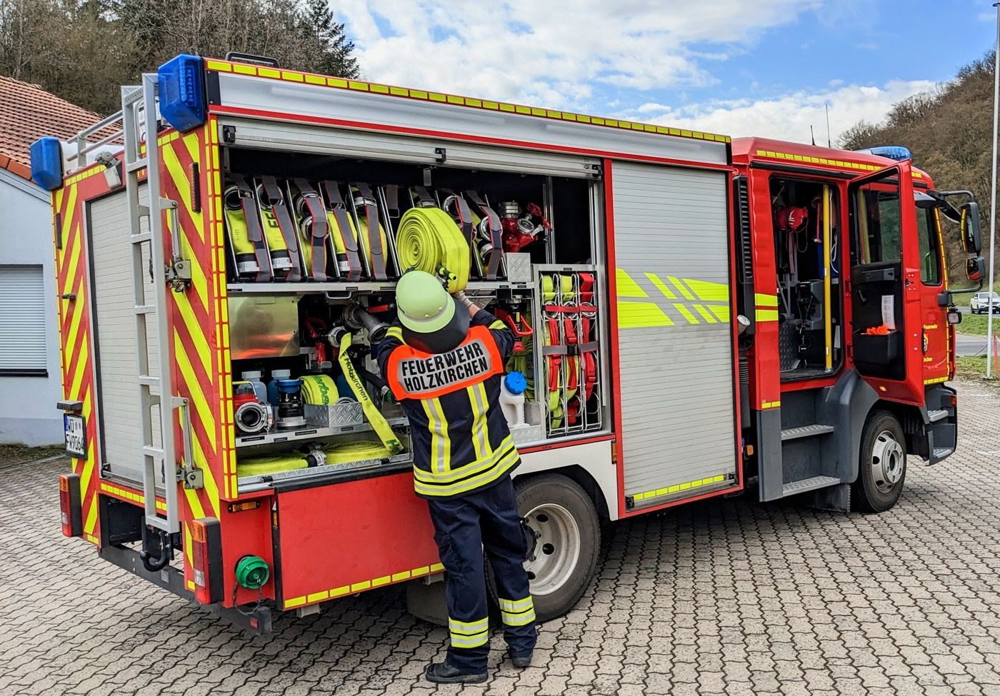
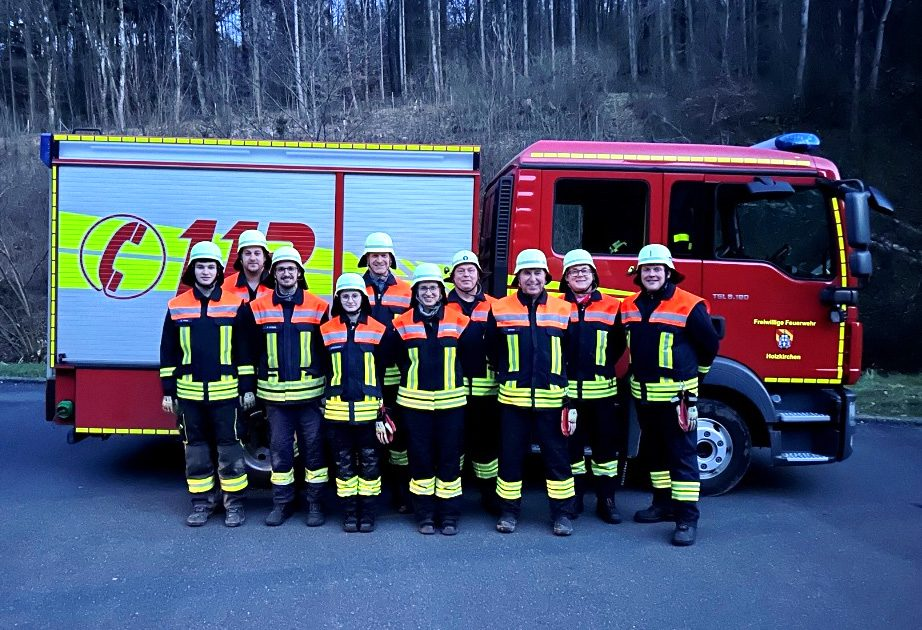
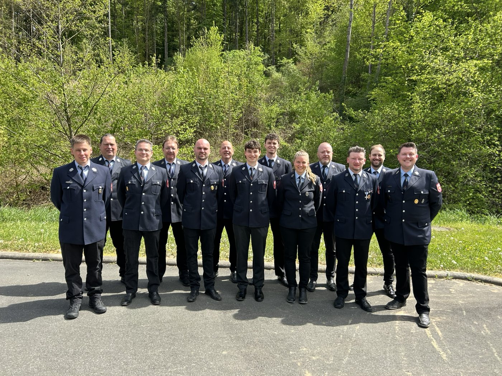
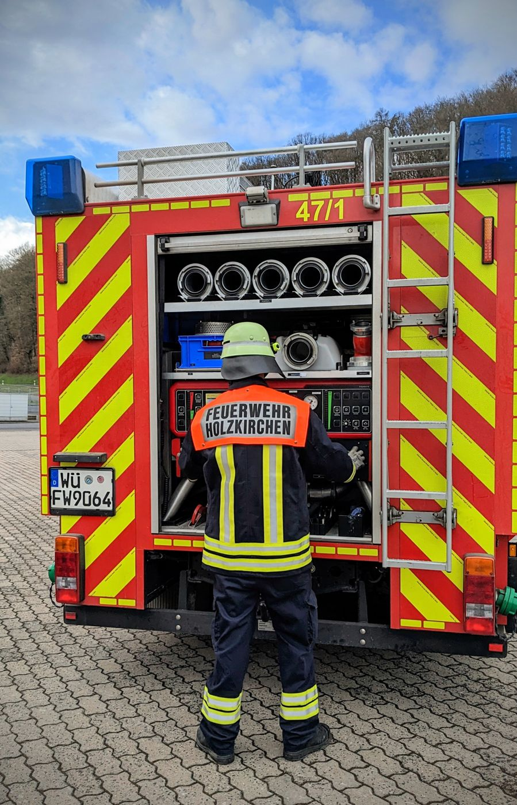
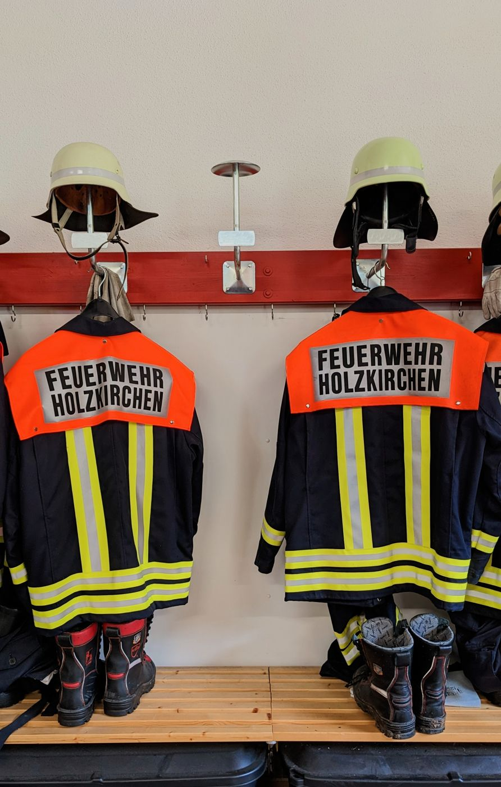

Richtig Notruf absetzen
Feuerwehr und Rettungsdienst erreichst du europaweit kostenlos unter 112. Ruhig bleiben – die Leitstelle führt dich durch das Gespräch.
- Wo ist es passiert?Ort, Straße, Hausnummer, Stockwerk – das Wichtigste zuerst
- Was ist passiert?Brand, Unfall, Unwetter, eingeklemmte Person …
- Wie viele Betroffene?Anzahl der Verletzten oder gefährdeten Personen
- Welche Verletzungen oder Gefahren?z. B. Bewusstlosigkeit, Rauch, auslaufende Stoffe
- Warten auf Rückfragen!Nicht auflegen – die Leitstelle beendet das Gespräch
Termine & Veranstaltungen
Was bei uns los ist
Termine werden geladen …
Über uns
Feuerwehr aus dem Ort, für den Ort
Seit 1896 helfen wir Menschen in Not – rund um die Uhr und ehrenamtlich. 2026 feierten wir unser 130-jähriges Bestehen gemeinsam mit dem FC Holzkirchen.
Heute prägen vor allem technische Hilfeleistungen unseren Einsatzalltag. Dafür üben wir regelmäßig in zwei Gruppen und gemeinsam mit den Feuerwehren aus Remlingen und Uettingen.
Feuerwehr heißt aber auch Gemeinschaft: Kappenabend, Bayerischer Abend und Christbaumfeier gehören bei uns fest dazu.
„Gott, hilf uns Mensch und Heimat schützen“Leitspruch auf unserer Fahne von 1971Unsere Chronik seit 1896

- 1896gegründet
- rund 30Aktive in zwei Gruppen
- Jugendwehrfür Jugendliche ab 12
- Kinderfeuerwehrin Planung
Unsere Vorstandschaft
- 1. KommandantSebastian Huppmann
- 2. KommandantMarkus Folly
- 1. VorstandDaniel Bachmann
- 2. VorstandKlaus Neumann
- JugendwartPatrick Pilsner


Fahrzeuge & Technik
Unsere Fahrzeuge
MLF 600 – Florian Holzkirchen 47/1. Unser Mittleres Löschfahrzeug von Ziegler ist seit 2018 im Dienst und hat das LF 8 von 1983 abgelöst. An Bord: Löschwasser, Pumpe, Schläuche, Atemschutz und Werkzeug für die technische Hilfe.
MTW – Florian Holzkirchen 14/1. Unser Mannschaftstransportwagen, ein Ford Transit, bringt weitere Einsatzkräfte und Material zur Einsatzstelle – und ist auch bei Übungen, Lehrgängen und mit der Jugendwehr unterwegs.

Mitmachen
Nutze die Chance.
Dein Haken an der Wand wartet schon. Wir suchen Menschen aus Holzkirchen, die anpacken wollen – Vorkenntnisse brauchst du keine.
- Ausbildung von Grund auf – wir bringen dir alles bei
- Komplette Schutzausrüstung wird gestellt
- Starke Kameradschaft und Feste im Ort
- Für Frauen und Männer, ab 12 Jahren in der Jugendwehr
- Eine Kinderfeuerwehr ist in Planung
Sprich einfach einen unserer Kommandanten oder Vorstände an – oder schreib uns.
Jetzt meldenFotos
Einblicke
Anfahrt
So findest du uns
Das Feuerwehrhaus liegt etwas außerhalb von Holzkirchen an der Nibelungenstraße in Richtung Wüstenzell. Bitte die Ausfahrt der Fahrzeughalle immer freihalten.
Kontakt
Sprich uns an
Fragen, Interesse am Mitmachen oder Hilfe bei einer Veranstaltung? Schreib uns einfach.